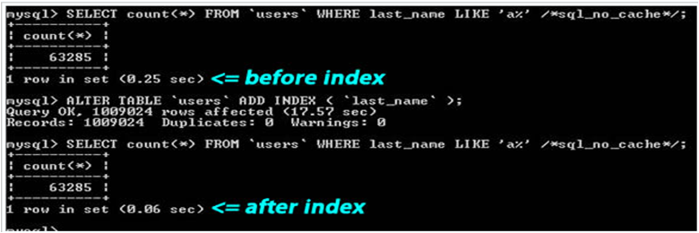

1.为查询缓存优化你的查询
MySQL的查询缓存对某些函数不起作用。所以，像 NOW() 和 RAND() 或是其它的诸如此类的SQL函数都不会开启查询缓存，因为这些函数的返回是会不定的易变的。
2.EXPLAIN 你的 SELECT 查
3.当只要一行数据时使用 LIMIT 1
4.为搜索字段建索引

5.在Join表的时候使用相当类型的列，并将其索引
SELECT company_name FROM users LEFT JOIN companies ON (users.state = companies.state) WHERE users.id = “user_id”
两个 state 字段应该是被建过索引的，而且应该是相当的类型，相同的字符集。
6.千万不要 ORDER BY RAND()
7.避免 SELECT *
8.使用 ENUM 而不是 VARCHAR
ENUM 类型是非常快和紧凑的。在实际上，其保存的是 TINYINT，但其外表上显示为字符串。这样一来，用这个字段来做一些选项列表变得相当的完美。
如果你有一个字段，比如“性别”，“国家”，“民族”，“状态”或“部门”，你知道这些字段的取值是有限而且固定的，那么，你应该使用 ENUM 而不是 VARCHAR。
9.尽可能的使用 NOT NULL
赋值为0或者""
10.固定长度的表会更快
如果表中的所有字段都是“固定长度”的，整个表会被认为是 “static” 或 “fixed-length”。 例如，表中没有如下类型的字段： VARCHAR，TEXT，BLOB。只要你包括了其中一个这些字段，那么这个表就不是“固定长度静态表”了，这样，MySQL 引擎会用另一种方法来处理。
11.垂直分割
“垂直分割”是一种把数据库中的表按列变成几张表的方法，这样可以降低表的复杂度和字段的数目，从而达到优化的目的。
12.拆分大的 DELETE 或 INSERT 语句
如果你需要在一个在线的网站上去执行一个大的 DELETE 或 INSERT 查询，你需要非常小心，要避免你的操作让你的整个网站停止相应。因为这两个操作是会锁表的，表一锁
住了，别的操作都进不来了。
13.越小的列会越快
对于大多数的数据库引擎来说，硬盘操作可能是最重大的瓶颈。所以，把你的数据变得紧凑会对这种情况非常有帮助，因为这减少了对硬盘的访问。
如果一个表只会有几列罢了（比如说字典表，配置表），那么，我们就没有理由使用 INT 来做主键，使用 MEDIUMINT, SMALLINT 或是更小的 TINYINT 会更经济一些。如果你不需要记录时间，使用 DATE 要比 DATETIME 好得多。
14.选择正确的存储引擎
在 MySQL 中有两个存储引擎 MyISAM 和 InnoDB。
MyISAM是MySQL的默认存储引擎（5.5以前），基于传统的ISAM类型，支持B-Tree，全文索引，但不是事务安全的，而且不支持外键。不具有原子性。支持表锁。
InnoDB是事务型引擎，支持ACID事务（实现4种事务隔离级别）、回滚、崩溃恢复能力、行锁。以及提供与Oracle类型一致的不加锁读取方式。InnoDB存储它的表和索引在一个表空
间中，表空间可以包含数个文件。

15.小心“永久链接”
16.永远为每张表设置一个ID
在小型项目中可以用视图，但是大型项目数据量大的禁止用sql，因为视图是拼一个大的结果集，从中取数据。